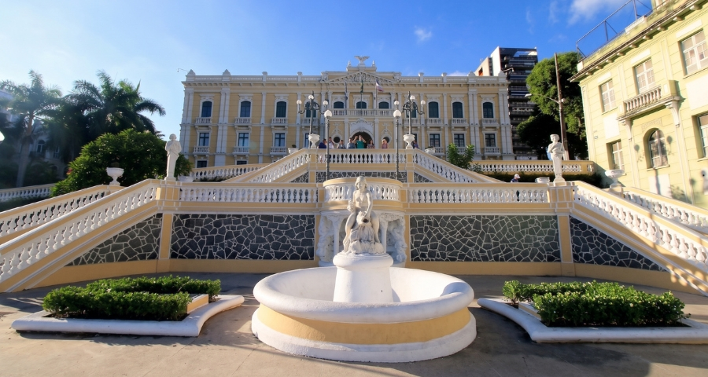

Palácio Anchieta

Uma viagem pela história capixaba
Na Cidade Alta, de frente para a Baía de Vitória, está um dos edifícios mais importantes da história do Espírito Santo: o Palácio Anchieta.
Antes de ser sede do governo estadual, o prédio já abrigou o antigo Colégio de São Tiago, a construção começou no século XVI. Ao longo dos séculos, passou por incêndios, reformas e mudanças de função, acompanhando transformações importantes da história capixaba.
Hoje tem mais do que só sua função institucional, o Palácio também recebe visitantes e atividades culturais. É uma oportunidade perfeita para conhecer um pouco mais sobre a formação do estado e observar de perto uma construção que atravessou diferentes períodos da nossa história.
E tem um detalhe que torna o passeio ainda mais interessante: a localização. Depois da visita, vale caminhar pela Cidade Alta, observar os prédios antigos e aproveitar a vista da baía.
Para quem gosta de fotografia, arquitetura e história, é uma parada que merece entrar no roteiro. O local abriga mostras temporárias de grande relevância em seu espaço cultural.
Recentemente, o palácio recebeu a aclamada exposição internacional “Picasso, a construção de um gênio”, reunindo dezenas de obras originais do artista espanhol e de seus contemporâneos.
A programação artística é rotativa e atualizada periodicamente na página do Palácio Anchieta no Instagram. A visitação para o público geral e individual é livre e sem burocracia.
Contudo, se você planeja ir em grupos grandes (a partir de 10 a 15 pessoas), o agendamento prévio é obrigatório. Ele serve para garantir que um mediador acompanhe o grupo pelos circuitos históricos, arqueológicos e salões oficiais.
Local: Praça João Clímaco, Centro, Vitória
Entrada: Consultar as condições de visitação no canal oficial
Telefone: (27) 3636-1032
Horários:
Terça a sexta, 09h às 17h
Sábado, domingo e feriado, 09h às 16h
Email: agendamento.palacioanchieta@es.gov.br
Instagram: @palacioanchietacultural
Site Oficial: Acessar Site